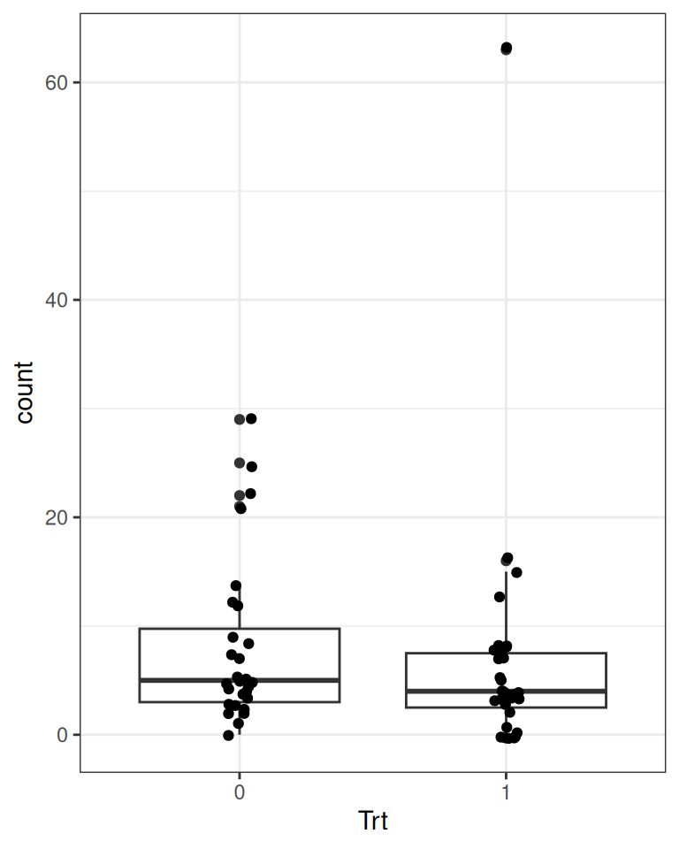
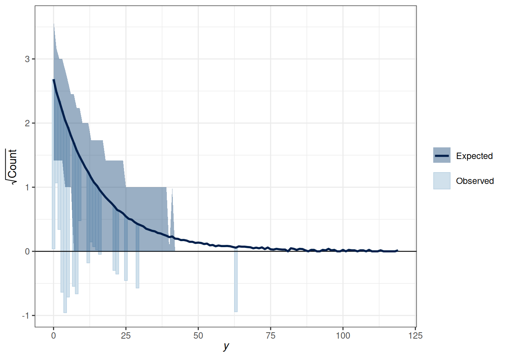
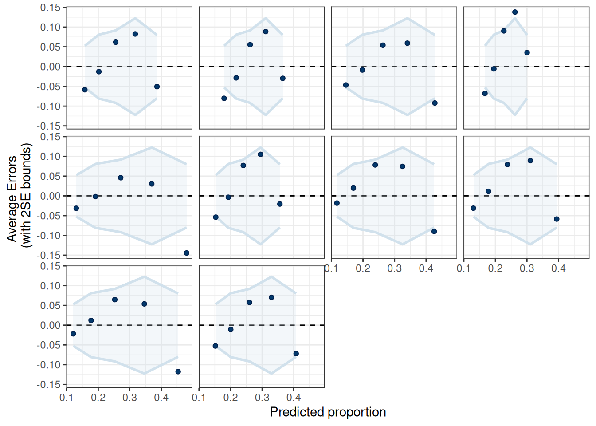

GLM (generalized linear model) is a general class of statistical models for predicting an outcome variable, \(Y\). It accommodates \(Y\) in different types of measurement, such as continuous, counts, ordinal, or categorical. GLM is a generalization of the usual regression model that assumes linear associations and normally distributed errors.
Just to be careful, some scholars also use the abbreviation GLM to mean the general linear model, and the latter is actually the same as the linear model, which is a special case of the GLM we will discuss here. Here, we discuss the GLM (the generalized one) that is especially popular for modeling binary and count outcomes, but we will start with the linear regression case.
18.1 Overview of GLM
Under the GLM framework, with one predictor, we have models in the form
Conditional distribution of \(Y\) (e.g., Dist = Normal, Poisson, Binomial, Bernoulli)1
Linear predictor \(\eta\), which is a linear combination of the predictor
Link function \(g(\cdot)\), which maps \(\mu\) to \(\eta\)
In a GLM, one selects distributions like Dist = Normal, Poisson, Binomial, Bernoulli, etc. The distribution has a mean parameter \(\mu_i\) and may have a dispersion parameter, \(\tau\). An intermediate step in GLM is transforming \(\mu_i\) to \(\eta_i\). \(\eta_i\) is called the linear predictor, which is the linear function of the predictors. In linear models, we directly model the conditional mean, \(\mu_i\), as the same as \(\eta_i\). However, to allow for the possibility of \(\mu_i\) being a nonlinear function of the predictors, in GLM we transform \(\mu_i\) by applying a link function, \(g(\cdot)\), so that, even though we \(\eta_i\) to be linear in the coefficients, \(\mu_i = g^{-1}(\eta_i)\) will be a nonlinear function of the coefficients as long as the link function is not linear. This step is needed to ensure the predicted values are not out of range.
The Poisson GLM is used to model count outcomes. Count outcomes are non-negative discrete integers. Remember, with GLM, we are modeling the mean of the outcome, \(\mu\). Therefore, we need to make sure \(\mu\) is non-negative, so we need a link function that can map \(\eta\) from the whole real line to non-negative numbers; by far, the most commonly used link function is the logarithmic transformation, \(g(\mu) = \log(\mu)\).
Here’s an example data set recording the effect of anticonvulsant therapy in epilepsy. The outcome variable is the number of seizures in the two-week window prior to the last of the four visits.
First check the distribution of the counts in Figure 18.1.
epilepsy4<-dplyr::filter(epilepsy, visit==4)epilepsy4$Trt<-factor(epilepsy4$Trt)ggplot(epilepsy4, aes(x =count))+geom_bar(width =0.5)ggplot(epilepsy4, aes(x =Trt, y =count))+geom_boxplot()+geom_jitter(width =0.05)
(a) Overall counts

(b) By treatment conditions
Figure 18.1: Distribution of the number of seizures in the epilepsy data set
Predicted seizure rate = \(\exp(\beta_0 + \beta_1) = \exp(\beta_0) \exp(\beta_1)\) for Trt = 1; \(\exp(\beta_0)\) for Trt = 0
\(\beta_1\) = mean difference in log rate of seizure; \(\exp(\beta_1)\) = ratio in rate of seizure
18.3.1 MCMC Sampling With brms
m2<-brm(count~Trt, data =epilepsy4, family =poisson(link ="log"), prior =c(prior(normal(1, 3), class ="Intercept"),prior(normal(0, 1), class ="b")), seed =31143, file ="10_m2")
For execution on a local, multicore CPU with excess RAM we recommend calling
options(mc.cores = parallel::detectCores()).
To avoid recompilation of unchanged Stan programs, we recommend calling
rstan_options(auto_write = TRUE)
For within-chain threading using `reduce_sum()` or `map_rect()` Stan functions,
change `threads_per_chain` option:
rstan_options(threads_per_chain = 1)
Attaching package: 'rstan'
The following objects are masked from 'package:posterior':
ess_bulk, ess_tail
The following object is masked from 'package:tidyr':
extract
18.3.2 Interpretations
Because of the nonlinear link function, one needs to be careful in interpreting the coefficients. With the log link, it is common to obtain the exponentiated coefficient. With the exponentiated coefficient, for every unit difference in \(X\), the predicted rate of seizure occurrence is multiplied by \(\exp(\beta_1)\) times. Here is the usual step for obtaining the posterior distributions of the transformed parameters:
Table 18.2: Posterior summary of the Poisson regression model
variable
mean
median
sd
mad
q5
q95
rhat
ess_bulk
ess_tail
b_Intercept
2.07
2.07
0.07
0.07
1.96
2.18
1
3472.02
2643.16
b_Trt1
-0.17
-0.17
0.10
0.10
-0.33
-0.01
1
3139.53
2637.42
Intercept
1.98
1.98
0.05
0.05
1.91
2.06
1
2930.65
2699.11
lprior
-3.01
-3.00
0.02
0.01
-3.04
-2.99
1
3326.32
2899.07
lp__
-334.41
-334.12
0.99
0.70
-336.27
-333.48
1
1838.59
2379.17
exp_beta0
7.95
7.93
0.52
0.53
7.13
8.84
1
3472.02
2643.16
exp_beta1
0.85
0.85
0.08
0.08
0.72
0.99
1
3139.53
2637.42
So here is a paragraph for the example:
The model predicts that the mean seizure rate in two weeks for the control condition is 8, 90% CI [7.1, 8.8]; the exponentiated coefficient for the treatment indicator is 0.85, 90% CI [0.72, 0.99], meaning that on average, the treatment reduces seizure rate by 0.94% to 27.83%.
18.3.3 Rootogram
There is also a useful graphical tool, the rootogram (Figure 18.2), for diagnosing count models.
pp_check(m2, type ="rootogram", style ="hanging")
Using all posterior draws for ppc type 'rootogram' by default.
Figure 18.2: Rootogram for the Poisson regression model
If the fit is good, the bars should be close to touching the horizontal x-axis. Thus, the fit was not good in the above figure. Models that accommodate overdispersion and excessive zeros may be needed.
18.4 Negative Binomial Model
The negative binomial distribution is usually used to handle overdispersion in count data. The idea is that even with the same predictor value, each individual has a different rate of occurrence for an event, which is highly plausible for the epilepsy data. This class will not get into the details of the negative binomial, but you can check out this paper or this book.
m2_nb<-brm(count~Trt, data =epilepsy4, family =negbinomial(link ="log"), prior =c(prior(normal(1, 3), class ="Intercept"),prior(normal(0, 1), class ="b")), seed =31143, file ="10_m2_nb")
pp_check(m2_nb, type ="rootogram", style ="hanging")
Using all posterior draws for ppc type 'rootogram' by default.

Figure 18.3: Rootogram for the Negative binomial model
18.5 Binary Logistic Regression
We will use an example from this paper: https://journals.sagepub.com/doi/abs/10.1177/0956797616645672, which examines how common it was for researchers to report marginal \(p\) values (i.e., .05 < \(p\)\(\leq\) .10). The outcome is whether a study reported one or more marginal \(p\) values (1 = Yes, 0 = No). The researchers also categorized the studies into three subfields (Cognitive Psychology, Developmental Psychology, Social Psychology), and there were a total of 1,535 studies examined from 1970 to 2010.
# readxl package can be used to import excel filesdatfile<-here("data", "marginalp.xlsx")if(!file.exists(datfile)){dir.create(here("data"), showWarnings =FALSE)download.file("https://osf.io/r4njf/download", destfile =datfile)}marginalp<-readxl::read_excel(datfile)# Recode `Field` into a factormarginalp<-marginalp|># Filter out studies without any experimentsfilter(`Number of Experiments`>=1)|>mutate(Field =factor(Field, labels =c("Cognitive Psychology","Developmental Psychology","Social Psychology")))|># Rename the outcomerename(marginal_p =`Marginals Yes/No`)# Proportion of marginal p in each subfield across Yearsmarginalp|>ggplot(aes(x =Year, y =marginal_p))+stat_summary(aes(fill =Field), geom ="ribbon", alpha =0.3)+stat_summary(aes(col =Field), geom ="line")+stat_summary(aes(col =Field), geom ="point")+coord_cartesian(ylim =c(0, 0.7))+facet_wrap(~Field)+theme(legend.position ="top")
No summary function supplied, defaulting to `mean_se()`
No summary function supplied, defaulting to `mean_se()`
No summary function supplied, defaulting to `mean_se()`
No summary function supplied, defaulting to `mean_se()`
No summary function supplied, defaulting to `mean_se()`
No summary function supplied, defaulting to `mean_se()`
No summary function supplied, defaulting to `mean_se()`
No summary function supplied, defaulting to `mean_se()`
No summary function supplied, defaulting to `mean_se()`
18.5.1 Centering
The issue of centering applies to most regression models, including GLMs. Because the predictor Year has values 1970, 1980, etc, if we use this variable as a predictor, the intercept \(\beta_0\) will be the predicted value of \(\eta\) when Year = 0, which is like 2,000 years before the data were collected. So instead, we usually want the value 0 to be something meaningful and/or a possible value in the data. So we will center the variable year by making 0 the year 1970. In addition, we will divide the values by 10 so that one unit in the new predictor means 10 years.
In other words, we will use a transformed predictor, Year10 = (Year - 1970) / 10. So when Year = 1970, Year10 = 0; when Year = 1990, Year10 = 2.
marginalp<-marginalp|>mutate(Year10 =(Year-1970)/10)# Check the recodedistinct(marginalp, Year, Year10)
For this example, I’ll look at the subset of developmental psychology. You may want to try using the other subsets of the data for practice.
As the name “logistic regression” suggested, the logistic function is used somewhere in the model. The logistic function, or the inverse logit function, is \[
\mu = g^{-1}(\eta) = \frac{\exp(\eta)}{1 + \exp(\eta)},
\] which is a transformation from \(\eta\) to \(\mu\). The link function, which is a transformation from \(\mu\) to \(\eta\), is the logit function, \[
\eta = g(\mu) = \log\frac{\mu}{1 - \mu},
\] which converts \(\mu\), which is in probability metric, to \(\eta\), which is in log odds metric (odds = probability / [1 - probability]).
There has been previous literature on what choices of prior on the \(\beta\) coefficients for logistic regressions would be appropriate (see this paper). \(\beta\) coefficients in logistic regression can be relatively large, unlike in normal regression. Therefore, it’s pointed out that a heavy tail distribution, like Cauchy and \(t\), would be more appropriate. Recent discussions have settled on priors such as \(t\) distributions with small degrees of freedom as a good balance between heavy tails and efficiency for MCMC sampling. I use \(t_4(4, 0, 2.5)\) for \(\beta_0\), which puts more density in [-2.5, 2.5] on the log odds unit. This means, in the year 1970, our belief is that the probability of marginally significant results would be somewhere between 0.08 to 0.92, which seems to cover a reasonable range. For \(\beta_1\), I use \(t_4(4, 0, 1)\), which suggests that a 10-year difference like corresponds to a difference in log odds between -1 and 1. While it’s hard to interpret the difference in log odds, a quick rule of thumb is to divide \(\beta_1\) by 4, which roughly corresponds to the maximum difference in probability for a unit difference in the predictor. So if \(\beta_1\) = 1, the maximum difference in probability will be no more than 25 percentage points. So my prior says that it’s unlikely that the probability of reporting marginal \(p\) values would increase or decrease by 25 percentage points every 10 years, which again is a weak prior. If you’re uncertain, you can consider something weaker.
The priors are chosen to be weakly informative.
m4<-brm(marginal_p~Year10, data =marginalp_dev, family =bernoulli(link ="logit"), prior =c(prior(student_t(4, 0, 1), class ="b"),prior(student_t(4, 0, 2.5), class ="Intercept")),# Note: no sigma seed =1340, file ="10_m4")
In brms we used family =bernoulli(). In other R functions, such as glm, they do not distinguish between bernoulli and Binomial and only recognize family =binomial(), as a Bernoulli variable is a binomial variable with \(n = 1\).
18.5.3 Interpreting the results
Any nonlinear relationships will involve more work in interpretations, and the coefficients in logistic regressions are no exception.
18.5.3.1 Posterior predictions
A good way to start is to plot the model-implied association on the original unit of the data. The conditional_effects() function in brms comes in very handy, and I recommend you always start with this:
Figure 18.4: Predicted probabilities of marginal significant results over time.
As you can see, the logistic model implies a somewhat nonlinear association between Year10 and the outcome. From the graph, when Year10 = 2, which is the Year 1990, the predicted probability of marginal significant results is about 25%, with a 90% credible interval of about 21 to 28%. We can get that using
From the equation, when all predictors are zero, we have \[
\mathrm{logit}(\mu_i) = \beta_0.
\] Therefore, the intercept is the log odds that a study reported a marginally significant \(p\) value when Year10 = 0 (i.e, in 1970), which was estimated to be -1.8, 90% CI [-2.1, -1.5]. As log odds are not as intuitive as probability, it is common to interpret instead \(\hat{\mu} = \mathrm{logistic}(\beta_0)\), which is the conditional probability of being marginal_p = 1 in 1970. For Bayesian, that means obtaining the posterior distribution of \(\mathrm{logistic}(\beta_0)\), which can be done by
The bayesplot package allows you to plot transformed parameters quickly:
mcmc_areas(m4, pars ="b_Intercept", transformations =list("b_Intercept"="plogis"), bw ="SJ")
18.5.3.3 Interpreting \(\exp(\beta_1)\) as odds ratio
The slope, \(\beta_1\), represents the difference in the predicted log odds between two observations with a unit difference in the predictor. For example, for two individuals with a unit difference in Year10 (i.e., 10 years), we have \[
\mathrm{logit}(\mu_{\text{marginal\_p} = 1}) -
\mathrm{logit}(\mu_{\text{marginal\_p} = 0}) = \beta_1.
\]
Again, the difference in log odds are hard to interpret, so we will exponentiate to get \[
\frac{\mathrm{odds}_{\text{marginal\_p} = 1}}
{\mathrm{odds}_{\text{marginal\_p} = 0}} = \exp(\beta_1).
\]
The fraction on the left-hand side is the odds ratio of reporting a marginal \(p\) value associated with a unit difference in Year10 (i.e., 10 years). An odds of 1.0 means that the probability of success and failure is equal; an odds > 1 means success is more likely than failures; and an odds < 1 means success is less likely than failures. Again, for Bayesian, we can obtain the posterior distribution of \(\exp(\beta_1)\) by
Using the posterior mean, we predict that the odds of reporting a marginal \(p\) value for a study that is 10 years later is multiplied by 1.4 times, 90% CI [1.3, 1.6]; in other words, every 10 years, the odds increased by 41.5852521%. Here’s the posterior density plot for the odds ratio:
mcmc_areas(m4, pars ="b_Year10", transformations =list("b_Year10"="exp"), bw ="SJ")
Odds ratio (OR) is popular as the multiplicative effect is constant, thus making interpretations easier. Also, in medical research and some other research areas, OR can be an excellent approximation of the relative risk, which is the probability ratio of two groups, of some rare diseases or events. However, odds and odds ratios are never intuitive metrics for people, and in many situations, a large odds ratio may be misleading as it may represent a very small effect. Therefore, in general, I would recommend you to interpret coefficients in probability units, even though that means more work.
18.5.3.4 Interpreting Coefficients in Probability Units
Another way to interpret the results of the logistic regression coefficient is to examine the change in probability. Because the predicted probability is a nonlinear function of the predictors, a unit difference in the predictor has different meanings depending on the values of \(X\) you chose for interpretations. You can see that in the conditional_effects() plot earlier.
Consider the change in the predicted probability of reporting a marginal \(p\) value with Year10 = 0 (1970), Year10 = 1 (1980), to Year10 = 4, respectively:
As you can see, the predicted difference in probability is smaller when comparing Year10 = 0 and 1, but is larger when comparing Year10 = 3 and 4.
The “divide by 4 rule”
A quick approximation is to divide the coefficient by 4 to get an upper bound on the change in probability associated with a unit change in the predictor. In our example, this corresponds to 0.3454722 / 4 = 0.086368, which is very close to the predicted difference in probability from Year10 = 3 to Year10 = 4.
18.5.4 Posterior Predictive Check
pp_check(m4, type ="error_binned")
Using 10 posterior draws for ppc type 'error_binned' by default.

Figure 18.5: Posterior Predictive Check for the binary logistic model.
The linear model is not the best fit.
18.5.5 Linear Spline
Use bs() to specify a linear spline (degree = 1) with one turning point (knots = 3).
library(splines)m5<-brm(marginal_p~bs(Year10, degree =1, knots =3), data =marginalp_dev, family =bernoulli(link ="logit"), prior =prior(student_t(4, 0, .875), class ="b"),# Note: no sigma seed =1340, file ="10_m5")
Warning:
`modelsummary` uses the `performance` package to extract goodness-of-fit
statistics from models of this class. You can specify the statistics you wish
to compute by supplying a `metrics` argument to `modelsummary`, which will then
push it forward to `performance`. Acceptable values are: "all", "common",
"none", or a character vector of metrics names. For example: `modelsummary(mod,
metrics = c("RMSE", "R2")` Note that some metrics are computationally
expensive. See `?performance::performance` for details.
This warning appears once per session.
linear
linear spline
b_Intercept
−1.82 [−2.20, −1.46]
−1.95 [−2.37, −1.55]
b_Year10
0.35 [0.22, 0.48]
b_bsYear10degreeEQ1knotsEQ31
1.57 [0.93, 2.27]
b_bsYear10degreeEQ1knotsEQ32
1.22 [0.69, 1.77]
Num.Obs.
535
535
R2
0.049
0.050
ELPD
−292.9
−290.1
ELPD s.e.
11.2
11.1
LOOIC
585.8
580.2
LOOIC s.e.
22.5
22.2
WAIC
585.8
580.2
RMSE
0.43
0.42
The linear spline is better according to the information criteria.
Strictly speaking, GLM requires distributions that are in the exponential family, which will not include distributions like the \(t\) distribution, but here, we also include models that use distributions similar to those in the exponential family, like the Student’s \(t\) distribution.↩︎
Source Code
# Generalized Linear Model```{r}#| include: falsecomma <-function(x, digits =2L) format(x, digits = digits, big.mark =",")library(tidyverse)theme_set(theme_bw() +theme(panel.grid.major.y =element_line(color ="grey92")))library(here)library(brms)options(brms.backend ="cmdstanr", mc.cores =2)library(posterior)library(bayesplot)library(modelsummary)```GLM (generalized linear model) is a general class of statistical models for predicting an outcome variable, $Y$. It accommodates $Y$ in different types of measurement, such as continuous, counts, ordinal, or categorical. GLM is a generalization of the usual regression model that assumes linear associations and normally distributed errors.::: {.callout-tip}Just to be careful, some scholars also use the abbreviation GLM to mean the *general* linear model, and the latter is actually the same as the linear model, which is a special case of the GLM we will discuss here. Here, we discuss the GLM (the generalized one) that is especially popular for modeling binary and count outcomes, but we will start with the linear regression case.:::## Overview of GLMUnder the GLM framework, with one predictor, we have models in the form$$ \begin{aligned} Y_i & \sim \mathrm{Dist}(\mu_i, \tau) \\ g(\mu_i) & = \eta_i \\ \eta_i & = \beta_0 + \beta_1 X_i \end{aligned}$$A GLM model has three components:- Conditional distribution of $Y$ (e.g., Dist = Normal, Poisson, Binomial, Bernoulli)[^exponential-family]- Linear predictor $\eta$, which is a linear combination of the predictor- Link function $g(\cdot)$, which maps $\mu$ to $\eta$[^exponential-family]: Strictly speaking, GLM requires distributions that are in the *exponential family*, which will not include distributions like the $t$ distribution, but here, we also include models that use distributions similar to those in the exponential family, like the Student's $t$ distribution.In a GLM, one selects distributions like Dist = Normal, Poisson, Binomial, Bernoulli, etc. The distribution has a mean parameter $\mu_i$ and may have a dispersion parameter, $\tau$. An intermediate step in GLM is transforming $\mu_i$ to $\eta_i$. $\eta_i$ is called the *linear predictor*, which is the linear function of the predictors. In linear models, we directly model the conditional mean, $\mu_i$, as the same as $\eta_i$. However, to allow for the possibility of $\mu_i$ being a nonlinear function of the predictors, in GLM we transform $\mu_i$ by applying a *link function*, $g(\cdot)$, so that, even though we $\eta_i$ to be linear in the coefficients, $\mu_i = g^{-1}(\eta_i)$ will be a nonlinear function of the coefficients as long as the link function is not linear. This step is needed to ensure the predicted values are not out of range.@tbl-glms includes some commonly used GLMs.| outcome type | Support | Distributions | Link ||:------------:|:-------:|:-------------:|:----:|| continuous | [$-\infty$, $\infty$] | Normal | Identity || count (fixed duration) | {0, 1, $\ldots$} | Poisson | Log || count (known # of trials) | {0, 1, $\ldots$, $N$} | Binomial | Logit || binary | {0, 1} | Bernoulli | Logit || ordinal | {0, 1, $\ldots$, K} | categorical | Logit || nominal | $K$-vector of {0, 1} | categorical | Logit || multinomial | $K$-vector of {0, 1, $\ldots$, $K$} | categorical | Logit |: Commonly used GLMs {#tbl-glms}## Poisson RegressionThe Poisson GLM is used to model count outcomes. Count outcomes are non-negative discrete integers. Remember, with GLM, we are modeling the mean of the outcome, $\mu$. Therefore, we need to make sure $\mu$ is non-negative, so we need a link function that can map $\eta$ from the whole real line to non-negative numbers; by far, the most commonly used link function is the logarithmic transformation, $g(\mu) = \log(\mu)$.Here's an example data set recording the effect of anticonvulsant therapy in epilepsy. The outcome variable is the number of seizures in the two-week window prior to the last of the four visits.First check the distribution of the counts in @fig-epilepsy4.```{r}#| label: fig-epilepsy4#| fig-cap: Distribution of the number of seizures in the epilepsy data set#| fig-width: 4#| layout-ncol: 2#| fig-subcap:#| - Overall counts#| - By treatment conditionsepilepsy4 <- dplyr::filter(epilepsy, visit ==4)epilepsy4$Trt <-factor(epilepsy4$Trt)ggplot(epilepsy4, aes(x = count)) +geom_bar(width =0.5)ggplot(epilepsy4, aes(x = Trt, y = count)) +geom_boxplot() +geom_jitter(width =0.05)```## Model and PriorsModel:$$\begin{aligned} \text{count}_i & \sim \mathrm{Pois}(\mu_i) \\ \log(\mu_i) & = \eta_i \\ \eta_i & = \beta_0 + \beta_1 \text{Trt}_{i}\end{aligned}$$Priors:$$\begin{aligned} \beta_0 & \sim N(3, 2.5) \\ \beta_1 & \sim N(0, 1)\end{aligned}$$Predicted seizure rate = $\exp(\beta_0 + \beta_1) = \exp(\beta_0) \exp(\beta_1)$ for Trt = 1; $\exp(\beta_0)$ for Trt = 0$\beta_1$ = mean difference in **log** rate of seizure; $\exp(\beta_1)$ = ratio in rate of seizure### MCMC Sampling With `brms````{r}m2 <-brm(count ~ Trt,data = epilepsy4,family =poisson(link ="log"),prior =c(prior(normal(1, 3), class ="Intercept"),prior(normal(0, 1), class ="b") ),seed =31143,file ="10_m2")```### InterpretationsBecause of the nonlinear link function, one needs to be careful in interpreting the coefficients. With the log link, it is common to obtain the exponentiated coefficient. With the exponentiated coefficient, for every unit difference in $X$, the predicted rate of seizure occurrence is **multiplied** by $\exp(\beta_1)$ times. Here is the usual step for obtaining the posterior distributions of the transformed parameters:```{r}#| label: tbl-m2-summary#| tbl-cap: Posterior summary of the Poisson regression modelm2_summary <-as_draws(m2) |>mutate_variables(exp_beta0 =exp(b_Intercept),exp_beta1 =exp(b_Trt1) ) |>summarize_draws()knitr::kable(m2_summary, digits =2)```So here is a paragraph for the example:```{r}#| include: falseget_mean_ci <-function(i, summ, unit ="", unit_ci ="") {paste0(comma(summ[["mean"]][i], 2), unit,", 90% CI [",comma(summ[["q5"]][i], 2), unit_ci, ", ",comma(summ[["q95"]][i], 2), unit_ci, "]" )}```::: {.callout-tip}The model predicts that the mean seizure rate in two weeks for the control condition is `r get_mean_ci(6, m2_summary)`; the exponentiated coefficient for the treatment indicator is `r get_mean_ci(7, m2_summary)`, meaning that on average, the treatment reduces seizure rate by `r round((1 - m2_summary[["q95"]][7]) * 100, 2)`% to `r round((1 - m2_summary[["q5"]][7]) * 100, 2)`%.:::### RootogramThere is also a useful graphical tool, the rootogram (@fig-rootogram), for diagnosing count models.```{r}#| label: fig-rootogram#| fig-cap: Rootogram for the Poisson regression modelpp_check(m2, type ="rootogram", style ="hanging")```If the fit is good, the bars should be close to touching the horizontal x-axis. Thus, the fit was not good in the above figure. Models that accommodate overdispersion and excessive zeros may be needed.## Negative Binomial ModelThe negative binomial distribution is usually used to handle overdispersion in count data. The idea is that even with the same predictor value, each individual has a different rate of occurrence for an event, which is highly plausible for the epilepsy data. This class will not get into the details of the negative binomial, but you can check out [this paper](https://online.ucpress.edu/collabra/article/7/1/27242/118591/Poisson-Regressions-A-Little-Fishy) or [this book](https://www.wiley.com/en-us/An+Introduction+to+Categorical+Data+Analysis%2C+3rd+Edition-p-9781119405269).```{r}m2_nb <-brm(count ~ Trt,data = epilepsy4,family =negbinomial(link ="log"),prior =c(prior(normal(1, 3), class ="Intercept"),prior(normal(0, 1), class ="b") ),seed =31143,file ="10_m2_nb")``````{r}#| label: fig-rootogram-nb#| fig-cap: Rootogram for the Negative binomial modelpp_check(m2_nb, type ="rootogram", style ="hanging")```## Binary Logistic RegressionWe will use an example from this paper: <https://journals.sagepub.com/doi/abs/10.1177/0956797616645672>, which examines how common it was for researchers to report marginal $p$ values (i.e., .05 < $p$ $\leq$ .10). The outcome is whether a study reported one or more marginal $p$ values (1 = Yes, 0 = No). The researchers also categorized the studies into three subfields (Cognitive Psychology, Developmental Psychology, Social Psychology), and there were a total of 1,535 studies examined from 1970 to 2010. ```{r}# readxl package can be used to import excel filesdatfile <-here("data", "marginalp.xlsx")if (!file.exists(datfile)) {dir.create(here("data"), showWarnings =FALSE)download.file("https://osf.io/r4njf/download",destfile = datfile )}marginalp <- readxl::read_excel(datfile)# Recode `Field` into a factormarginalp <- marginalp |># Filter out studies without any experimentsfilter(`Number of Experiments`>=1) |>mutate(Field =factor(Field,labels =c("Cognitive Psychology","Developmental Psychology","Social Psychology" ) )) |># Rename the outcomerename(marginal_p =`Marginals Yes/No`)# Proportion of marginal p in each subfield across Yearsmarginalp |>ggplot(aes(x = Year, y = marginal_p)) +stat_summary(aes(fill = Field), geom ="ribbon", alpha =0.3) +stat_summary(aes(col = Field), geom ="line") +stat_summary(aes(col = Field), geom ="point") +coord_cartesian(ylim =c(0, 0.7)) +facet_wrap(~ Field) +theme(legend.position ="top")```### CenteringThe issue of centering applies to most regression models, including GLMs. Because the predictor `Year` has values 1970, 1980, etc, if we use this variable as a predictor, the intercept $\beta_0$ will be the predicted value of $\eta$ when `Year` = 0, which is like 2,000 years before the data were collected. So instead, we usually want the value 0 to be something meaningful and/or a possible value in the data. So we will center the variable year by making 0 the year 1970. In addition, we will divide the values by 10 so that one unit in the new predictor means 10 years.In other words, we will use a transformed predictor, `Year10` = (`Year` - 1970) / 10. So when `Year` = 1970, `Year10` = 0; when `Year` = 1990, `Year10` = 2.```{r}marginalp <- marginalp |>mutate(Year10 = (Year -1970) /10)# Check the recodedistinct(marginalp, Year, Year10)```For this example, I'll look at the subset of developmental psychology. You may want to try using the other subsets of the data for practice.```{r}marginalp_dev <-filter(marginalp, Field =="Developmental Psychology")head(marginalp_dev)```### Model and PriorsAs the name "logistic regression" suggested, the logistic function is used somewhere in the model. The logistic function, or the inverse logit function, is $$\mu = g^{-1}(\eta) = \frac{\exp(\eta)}{1 + \exp(\eta)},$$which is a transformation from $\eta$ to $\mu$. The link function, which is a transformation from $\mu$ to $\eta$, is the logit function,$$\eta = g(\mu) = \log\frac{\mu}{1 - \mu},$$which converts $\mu$, which is in probability metric, to $\eta$, which is in log odds metric (odds = probability / [1 - probability]).Model:$$\begin{aligned} \text{marginal\_p}_i & \sim \mathrm{Bern}(\mu_i) \\ \mathrm{logit}(\mu_i) & = \eta_i \\ \eta_i & = \beta_0 + \beta_1 \text{Year10}_{i}\end{aligned}$$Priors:$$\begin{aligned} \beta_0 & \sim t_4(0, 2.5) \\ \beta_1 & \sim t_4(0, 1)\end{aligned}$$There has been previous literature on what choices of prior on the $\beta$ coefficients for logistic regressions would be appropriate (see [this paper](https://projecteuclid.org/journals/annals-of-applied-statistics/volume-2/issue-4/A-weakly-informative-default-prior-distribution-for-logistic-and-other/10.1214/08-AOAS191.full)). $\beta$ coefficients in logistic regression can be relatively large, unlike in normal regression. Therefore, it's pointed out that a heavy tail distribution, like Cauchy and $t$, would be more appropriate. Recent discussions have settled on priors such as $t$ distributions with small degrees of freedom as a good balance between heavy tails and efficiency for MCMC sampling. I use $t_4(4, 0, 2.5)$ for $\beta_0$, which puts more density in [-2.5, 2.5] on the log odds unit. This means, in the year 1970, our belief is that the probability of marginally significant results would be somewhere between `r round(plogis(-2.5), 2)` to `r round(plogis(2.5), 2)`, which seems to cover a reasonable range. For $\beta_1$, I use $t_4(4, 0, 1)$, which suggests that a 10-year difference like corresponds to a difference in log odds between -1 and 1. While it's hard to interpret the difference in log odds, a quick rule of thumb is to divide $\beta_1$ by 4, which roughly corresponds to the maximum difference in probability for a unit difference in the predictor. So if $\beta_1$ = 1, the maximum difference in probability will be no more than 25 percentage points. So my prior says that it's unlikely that the probability of reporting marginal $p$ values would increase or decrease by 25 percentage points every 10 years, which again is a weak prior. If you're uncertain, you can consider something weaker.The priors are chosen to be weakly informative. ```{r}m4 <-brm(marginal_p ~ Year10,data = marginalp_dev,family =bernoulli(link ="logit"),prior =c(prior(student_t(4, 0, 1), class ="b"),prior(student_t(4, 0, 2.5), class ="Intercept") ),# Note: no sigmaseed =1340,file ="10_m4")```::: {.callout-tip}In `brms` we used `family = bernoulli()`{.r}. In other R functions, such as `glm`, they do not distinguish between bernoulli and Binomial and only recognize `family = binomial()`{.r}, as a Bernoulli variable is a binomial variable with $n = 1$.:::### Interpreting the resultsAny nonlinear relationships will involve more work in interpretations, and the coefficients in logistic regressions are no exception. #### Posterior predictionsA good way to start is to plot the model-implied association on the original unit of the data. The `conditional_effects()` function in `brms` comes in very handy, and I recommend you always start with this:```{r}#| label: fig-condeff-m4#| fig-cap: Predicted probabilities of marginal significant results over time.plot(conditional_effects(m4, prob = .90),points =TRUE,point_args =list(height =0.01, width =0.05, alpha =0.05),plot =FALSE)[[1]] +scale_x_continuous(breaks =0:4,labels =c("1970", "1980", "1990", "2000", "2010") ) +xlab("Year")```As you can see, the logistic model implies a somewhat nonlinear association between `Year10` and the outcome. From the graph, when `Year10` = 2, which is the Year 1990, the predicted probability of marginal significant results is about 25%, with a 90% credible interval of about 21 to 28%. We can get that using```{r}posterior_epred(m4, newdata =list(Year10 =2)) |>summarise_draws()```#### InterceptFrom the equation, when all predictors are zero, we have$$\mathrm{logit}(\mu_i) = \beta_0.$$Therefore, the intercept is the log odds that a study reported a marginally significant $p$ value when `Year10` = 0 (i.e, in 1970), which was estimated to be `r get_mean_ci(1, summarize_draws(m4))`. As log odds are not as intuitive as probability, it is common to interpret instead $\hat{\mu} = \mathrm{logistic}(\beta_0)$, which is the conditional probability of being `marginal_p` = 1 in 1970. For Bayesian, that means obtaining the posterior distribution of $\mathrm{logistic}(\beta_0)$, which can be done by```{r}m4_draws <-as_draws(m4)m4_draws <- m4_draws |>mutate_variables(logistic_beta0 =plogis(b_Intercept))m4_draws |>subset(variable ="logistic_beta0") |>summary()```The `bayesplot` package allows you to plot transformed parameters quickly:```{r}mcmc_areas(m4, pars ="b_Intercept",transformations =list("b_Intercept"="plogis"),bw ="SJ")```#### Interpreting $\exp(\beta_1)$ as odds ratioThe slope, $\beta_1$, represents the difference in the predicted log odds between two observations with a unit difference in the predictor. For example, for two individuals with a unit difference in `Year10` (i.e., 10 years), we have$$\mathrm{logit}(\mu_{\text{marginal\_p} = 1}) - \mathrm{logit}(\mu_{\text{marginal\_p} = 0}) = \beta_1.$$Again, the difference in log odds are hard to interpret, so we will exponentiate to get$$\frac{\mathrm{odds}_{\text{marginal\_p} = 1}} {\mathrm{odds}_{\text{marginal\_p} = 0}} = \exp(\beta_1).$$The fraction on the left-hand side is the *odds ratio* of reporting a marginal $p$ value associated with a unit difference in `Year10` (i.e., 10 years). An odds of 1.0 means that the probability of success and failure is equal; an odds > 1 means success is more likely than failures; and an odds < 1 means success is less likely than failures. Again, for Bayesian, we can obtain theposterior distribution of $\exp(\beta_1)$ by```{r}m4_draws <- m4_draws |>mutate_variables(exp_beta1 =exp(b_Year10))m4_draws |>subset(variable ="exp_beta1") |>summary()``````{r}#| include: falsem4_summ <-summary(m4_draws)```Using the posterior mean, we predict that the odds of reporting a marginal $p$ value for a study that is 10 years later is multiplied by `r get_mean_ci(7, m4_summ, unit = " times")`; in other words, every 10 years, the odds increased by `r (m4_summ[["mean"]][7] - 1) * 100`%. Here's the posterior density plot for the odds ratio:```{r}mcmc_areas(m4, pars ="b_Year10",transformations =list("b_Year10"="exp"),bw ="SJ")```Odds ratio (OR) is popular as the multiplicative effect is constant, thus making interpretations easier. Also, in medical research and some other research areas, OR can be an excellent approximation of the relative risk, which is the probability ratio of two groups, of some rare diseases or events. However, odds and odds ratios are never intuitive metrics for people, and in many situations, a large odds ratio may be misleading as it may represent a very small effect. Therefore, in general, I would recommend you to interpret coefficients in probability units, even though that means more work.#### Interpreting Coefficients in Probability UnitsAnother way to interpret the results of the logistic regression coefficient is to examine the change in probability. Because the predicted probability is a nonlinear function of the predictors, a unit difference in the predictor has different meanings depending on the values of $X$ you chose for interpretations. You can see that in the `conditional_effects()` plot earlier.Consider the change in the predicted probability of reporting a marginal $p$ value with `Year10` = 0 (1970), `Year10` = 1 (1980), to `Year10` = 4, respectively:```{r}m4_pred <-posterior_epred(m4, list(Year10 =0:4))colnames(m4_pred) <-paste0("Year10=", 0:4)summarise_draws(m4_pred)```As you can see, the predicted difference in probability is smaller when comparing `Year10` = 0 and 1, but is larger when comparing `Year10` = 3 and 4.::: {.callout-tip}## The "divide by 4 rule"A quick approximation is to divide the coefficient by 4 to get an upper bound on the change in probability associated with a unit change in the predictor. In our example, this corresponds to `r fixef(m4)[2]` / 4 = `r fixef(m4)[2] / 4`, which is very close to the predicted difference in probability from `Year10` = 3 to `Year10` = 4.:::### Posterior Predictive Check```{r}#| label: fig-ppc-m4#| fig-cap: "Posterior Predictive Check for the binary logistic model."pp_check( m4,type ="error_binned")```The linear model is not the best fit.### Linear SplineUse `bs()` to specify a linear spline (degree = 1) with one turning point (knots = 3). ```{r}library(splines)m5 <-brm(marginal_p ~bs(Year10, degree =1, knots =3),data = marginalp_dev,family =bernoulli(link ="logit"),prior =prior(student_t(4, 0, .875), class ="b"),# Note: no sigmaseed =1340,file ="10_m5")```### Posterior Prediction```{r}#| label: fig-condeff-m5#| fig-cap: Predicted probabilities of marginal significant results over time with the spline model.plot(conditional_effects(m5),points =TRUE,point_args =list(height =0.01, width =0.05, alpha =0.05))``````{r}#| label: fig-ppc-m5#| fig-cap: "Posterior Predictive Check for the binary logistic model with a linear spline."pp_check( m5,type ="error_binned",x ="Year10")```### Model Comparison```{r}msummary(list(linear = m4, `linear spline`= m5),estimate ="{estimate} [{conf.low}, {conf.high}]",statistic =NULL, fmt =2)```The linear spline is better according to the information criteria.